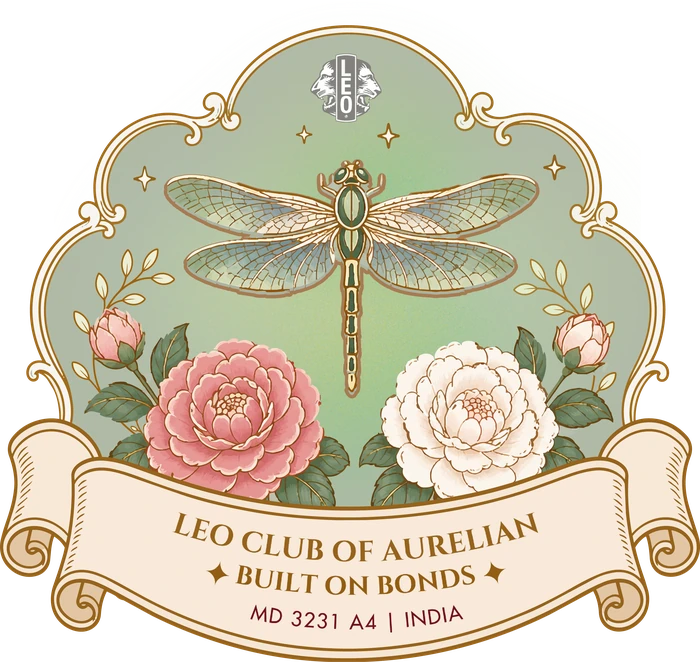

Leo Club International · District 3231 A4
Our motto for the year
Just as a building stands firm because of its foundation, our club stands strong because of the bonds that bring us together.
The circle that leads
Each card lights as the dragonfly passes it.
Where we have been
What comes next
Join us